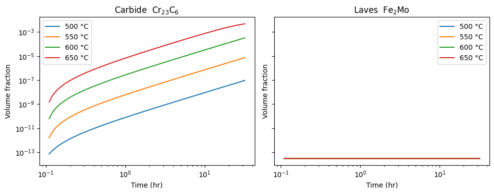
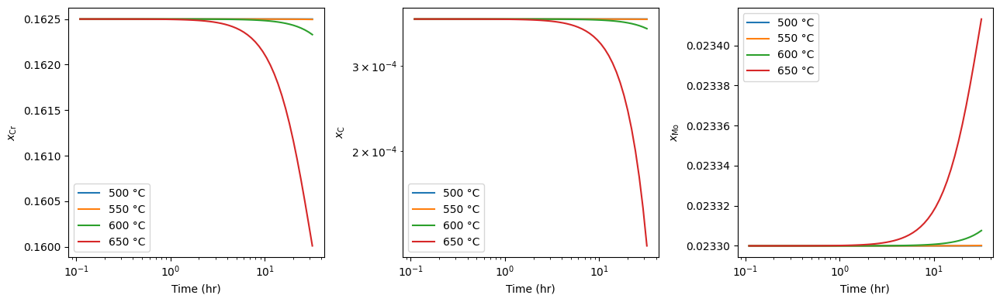
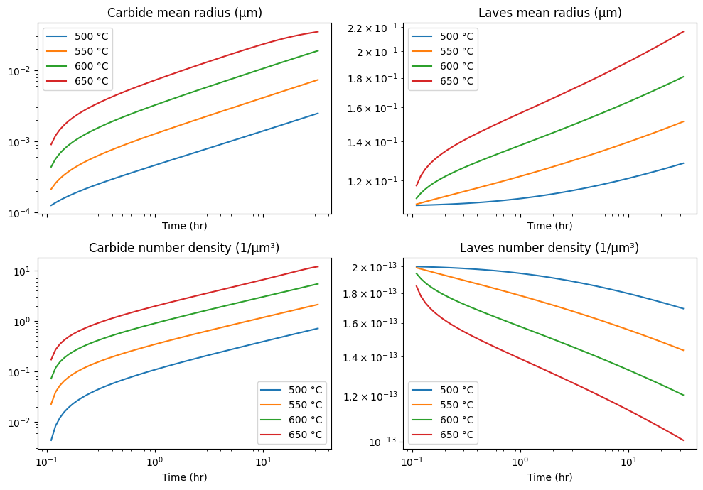
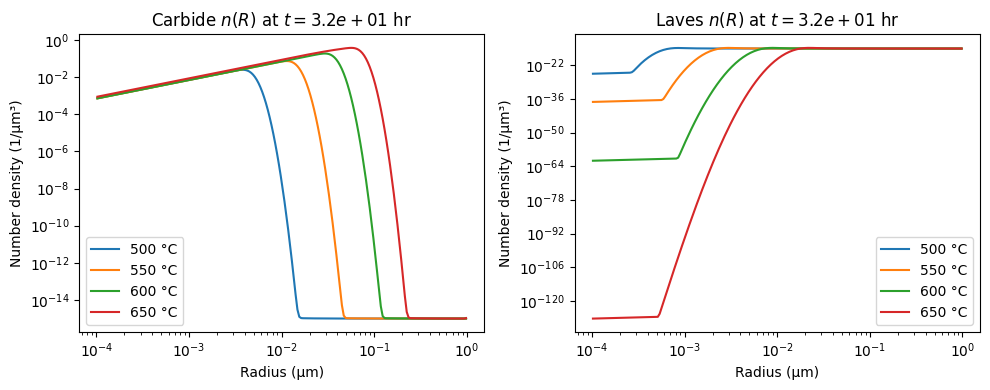

316H two-phase precipitation (carbide + Laves)¶
This worked example assembles a two-phase precipitation model for 316H austenitic stainless steel from the KWN (precipitation kinetics) catalog and runs it across a range of service temperatures. Two precipitate populations compete for the same matrix solute reservoir:
\(\mathrm{Cr}_{23}\mathrm{C}_6\) carbide — rate-limited by chromium,
\(\mathrm{Fe}_2\mathrm{Mo}\) Laves phase — rate-limited by molybdenum.
Rather than tracking a single mean radius per phase, we solve the full population-balance equation for each phase’s size distribution \(n(R,t)\) on a shared radius grid, so nucleation, growth, and coarsening all emerge from the same upwinded advection in radius space.
The material data and composition follow
J. Hu, G. Green, S. Hogg, R. Higginson, A. Cocks, Effect of microstructure evolution on the creep properties of a polycrystalline 316H austenitic stainless steel, Materials Science & Engineering A 772 (2020) 138787, doi:10.1016/j.msea.2019.138787.
See KWN (precipitation kinetics) for the governing equations and the catalog of primitives wired together below.
Material data¶
All values live in precipitation_316h.i (next to this notebook); they are
reproduced here so the example is self-documenting. Units throughout:
length = μm, time = hr, concentration = mass fraction.
Quantity |
Carbide (\(\mathrm{Cr}_{23}\mathrm{C}_6\)) |
Laves (\(\mathrm{Fe}_2\mathrm{Mo}\)) |
|---|---|---|
Surface energy \(\gamma\) (J/m²) |
0.30 |
0.25 |
Molar volume \(V_m\) (m³/mol) |
6×10⁻⁶ |
2×10⁻⁵ |
Nucleation site density (1/m³) |
1×10¹⁵ |
5×10¹⁴ |
Rate-limiting species |
Cr |
Mo |
Diffusion |
\(D_0\) (m²/s) |
\(Q\) (kJ/mol) |
|---|---|---|
Cr |
1.5×10⁻⁴ |
240 |
Mo |
7.4×10⁻⁴ |
283 |
Initial matrix mass fractions (after deducting 0.8 vol% pre-existing
intergranular carbide): \(x_{0,\mathrm{Cr}} = 0.1625\),
\(x_{0,\mathrm{C}} = 3.75\times10^{-4}\), \(x_{0,\mathrm{Mo}} = 0.0233\). The
equilibrium matrix and precipitate compositions at the tabulated temperatures
come from the ThermoCalc values reported in the paper and are interpolated with
ScalarLinearInterpolation.
Set up¶
precipitation_316h.i composes the KWN primitives (volume fraction, mass-balance
concentration, projected diffusivity, ideal-solution driving force, the
classical-nucleation chain, and the rate-limited growth rate) with the
Finite volume advection machinery, once per phase, and wraps the
population balance in an ImplicitUpdate Newton solve. The model evaluates on
the GPU when one is available; we work in double precision throughout.
import torch
import numpy as np
import matplotlib.pyplot as plt
import neml2
from neml2.types import Scalar
from neml2.aoti import ConvergenceError
torch.set_default_dtype(torch.double)
device = torch.device("cuda:0" if torch.cuda.is_available() else "cpu")
print(f"Running on {device}")
Running on cuda:0
Load the model and build the radius grid¶
Both phases share one logarithmic radius grid spanning 0.1 nm to 1 μm (200 cells). The grid is built inside the input file; we mirror the cell centers here for plotting.
nbins = 200
edges = torch.logspace(-4, 0, nbins + 1) # 0.1 nm to 1 μm
centers = 0.5 * (edges[:-1] + edges[1:])
R = centers.numpy()
model = neml2.load_model("precipitation_316h.i", "model").to(device)
out_names = list(model.output_spec.keys())
model
ComposedModel(
(model_step): ImplicitUpdate(
(implicit_rate): ComposedModel(
(D_Cr): ArrheniusParameter()
(D_Mo): ArrheniusParameter()
(Cr_eq): ScalarLinearInterpolation()
(C_eq): ScalarLinearInterpolation()
(Mo_eq): ScalarLinearInterpolation()
(Cr_p_C): ScalarLinearInterpolation()
(C_p_C): ScalarLinearInterpolation()
(Mo_p_L): ScalarLinearInterpolation()
(dx_C_Cr): ScalarLinearInterpolation()
(dx_L_Mo): ScalarLinearInterpolation()
(vol_fraction_C): PrecipitateVolumeFraction()
(vol_fraction_L): PrecipitateVolumeFraction()
(x_Cr): CurrentConcentration()
(x_C): CurrentConcentration()
(x_Mo): CurrentConcentration()
(S_C): ProjectedDiffusivitySum()
(growth_C): RateLimitedPrecipitateGrowthRate()
(dg_v_C): IdealSolutionVolumetricDrivingForce()
(S_L): ProjectedDiffusivitySum()
(dg_v_L): IdealSolutionVolumetricDrivingForce()
(growth_L): RateLimitedPrecipitateGrowthRate()
(v_edge_C): LinearlyInterpolateToCellEdges()
(barrier_C): NucleationBarrierAndCriticalRadius()
(barrier_L): NucleationBarrierAndCriticalRadius()
(v_edge_L): LinearlyInterpolateToCellEdges()
(flux_C): FiniteVolumeUpwindedAdvectiveFlux()
(Z_C): ZeldovichFactor()
(beta_C): KineticFactor()
(Z_L): ZeldovichFactor()
(beta_L): KineticFactor()
(flux_L): FiniteVolumeUpwindedAdvectiveFlux()
(flux_C_left): FiniteVolumeAppendBoundaryCondition()
(J_C): NucleationFluxMagnitude()
(J_L): NucleationFluxMagnitude()
(flux_L_left): FiniteVolumeAppendBoundaryCondition()
(flux_C_right): FiniteVolumeAppendBoundaryCondition()
(nuc_flux_C): DumpInSmallestBin()
(nuc_flux_L): DumpInSmallestBin()
(flux_L_right): FiniteVolumeAppendBoundaryCondition()
(flux_div_C): FiniteVolumeGradient()
(flux_div_L): FiniteVolumeGradient()
(n_dot_C): ScalarLinearCombination()
(n_dot_L): ScalarLinearCombination()
(integrate_C): ScalarBackwardEulerTimeIntegration()
(integrate_L): ScalarBackwardEulerTimeIntegration()
)
(predictor): ConstantExtrapolationPredictor()
)
(Cr_p_C): ScalarLinearInterpolation()
(C_p_C): ScalarLinearInterpolation()
(Mo_p_L): ScalarLinearInterpolation()
(vol_fraction_C): PrecipitateVolumeFraction()
(vol_fraction_L): PrecipitateVolumeFraction()
(x_Cr): CurrentConcentration()
(x_C): CurrentConcentration()
(x_Mo): CurrentConcentration()
)
Time history¶
We sweep four service temperatures (500–650 °C) over roughly four decades of time, stepping the implicit update from one log-spaced time point to the next. The temperatures form a plain batch axis, so all four histories advance in a single vectorized call per step.
The carbide saturates first — and fastest at the highest temperature, which is
also where the backward-Euler / Newton step becomes stiffest. If a step fails to
converge we stop the sweep gracefully and keep the history collected so far
(ConvergenceError is NEML2’s recoverable solver-divergence signal).
T_K = torch.tensor([773.15, 823.15, 873.15, 923.15], device=device) # 500..650 °C
times = torch.logspace(-1, 3, 100, device=device) # 0.1 .. 1000 hr
T = Scalar(T_K)
ic = Scalar(torch.full((nbins,), 1e-15, device=device), sub_batch_ndim=1) # tiny seed
ndC = ndL = ic
keys = ("vf_C", "vf_L", "x_Cr", "x_C", "x_Mo", "number_density_C", "number_density_L")
trace = {k: [] for k in keys}
t_done = []
for i in range(1, len(times)):
# input_spec order: T, number_density_C~1, t, t~1, number_density_L~1
try:
outs = model(T, ndC, Scalar(times[i].clone()), Scalar(times[i - 1].clone()), ndL)
except ConvergenceError:
print(f"Stopped at step {i}, t = {float(times[i]):.3e} hr (Newton did not converge).")
break
res = dict(zip(out_names, outs))
ndC, ndL = res["number_density_C"], res["number_density_L"]
for k in keys:
trace[k].append(res[k].data.detach().cpu())
t_done.append(float(times[i]))
t_done = np.array(t_done)
trace = {k: torch.stack(v).numpy() for k, v in trace.items()}
labels = [f"{float(t) - 273.15:.0f} °C" for t in T_K]
print(f"Completed {len(t_done)} of {len(times) - 1} steps.")
Stopped at step 63, t = 3.511e+01 hr (Newton did not converge).
Completed 62 of 99 steps.
Volume fractions¶
The carbide reaches its (small) saturation level far faster than Laves, and both accelerate with temperature.
fig, axes = plt.subplots(1, 2, figsize=(10, 4), sharex=True, sharey=True)
for j, lbl in enumerate(labels):
axes[0].loglog(t_done, trace["vf_C"][:, j], label=lbl)
axes[1].loglog(t_done, trace["vf_L"][:, j], label=lbl)
axes[0].set_title("Carbide $\\mathrm{Cr}_{23}\\mathrm{C}_6$")
axes[1].set_title("Laves $\\mathrm{Fe}_2\\mathrm{Mo}$")
for ax in axes:
ax.set_xlabel("Time (hr)")
ax.set_ylabel("Volume fraction")
ax.legend()
fig.tight_layout()

Matrix solute concentrations¶
Carbon is the limiting reagent for the carbide, so it depletes sharply; chromium is in large excess and barely moves; molybdenum is nearly flat because Laves nucleation is still in its lag phase over this window.
fig, axes = plt.subplots(1, 3, figsize=(13, 4))
for j, lbl in enumerate(labels):
axes[0].semilogx(t_done, trace["x_Cr"][:, j], label=lbl)
axes[1].loglog(t_done, trace["x_C"][:, j], label=lbl)
axes[2].semilogx(t_done, trace["x_Mo"][:, j], label=lbl)
axes[0].set_ylabel("$x_{\\mathrm{Cr}}$")
axes[1].set_ylabel("$x_{\\mathrm{C}}$")
axes[2].set_ylabel("$x_{\\mathrm{Mo}}$")
for ax in axes:
ax.set_xlabel("Time (hr)")
ax.legend()
fig.tight_layout()

Mean radius and number density¶
The mean radius is the first moment of the size distribution, \(\bar R = \sum_i R_i n_i / \sum_i n_i\). Carbide coarsening shows up as a rising mean radius once nucleation has tailed off.
def moments(n):
total = n.sum(axis=-1)
mean_R = (n * R).sum(axis=-1) / np.where(total > 0, total, 1.0)
return mean_R, total
mean_R_C, N_C = moments(trace["number_density_C"])
mean_R_L, N_L = moments(trace["number_density_L"])
fig, axes = plt.subplots(2, 2, figsize=(10, 7), sharex=True)
for j, lbl in enumerate(labels):
axes[0, 0].loglog(t_done, mean_R_C[:, j], label=lbl)
axes[0, 1].loglog(t_done, mean_R_L[:, j], label=lbl)
axes[1, 0].loglog(t_done, N_C[:, j], label=lbl)
axes[1, 1].loglog(t_done, N_L[:, j], label=lbl)
axes[0, 0].set_title("Carbide mean radius (μm)")
axes[0, 1].set_title("Laves mean radius (μm)")
axes[1, 0].set_title("Carbide number density (1/μm³)")
axes[1, 1].set_title("Laves number density (1/μm³)")
for ax in axes.flat:
ax.set_xlabel("Time (hr)")
ax.legend()
fig.tight_layout()

Final size distributions¶
A snapshot of \(n(R)\) at the last converged step. The carbide distribution at the higher temperatures has spread toward larger radii by coarsening, while Laves is still close to its tiny seed.
fig, axes = plt.subplots(1, 2, figsize=(10, 4), sharex=True)
for j, lbl in enumerate(labels):
axes[0].loglog(R, trace["number_density_C"][-1, j], label=lbl)
axes[1].loglog(R, trace["number_density_L"][-1, j], label=lbl)
axes[0].set_title(f"Carbide $n(R)$ at $t = {t_done[-1]:.1e}$ hr")
axes[1].set_title(f"Laves $n(R)$ at $t = {t_done[-1]:.1e}$ hr")
for ax in axes:
ax.set_xlabel("Radius (μm)")
ax.set_ylabel("Number density (1/μm³)")
ax.legend()
fig.tight_layout()
